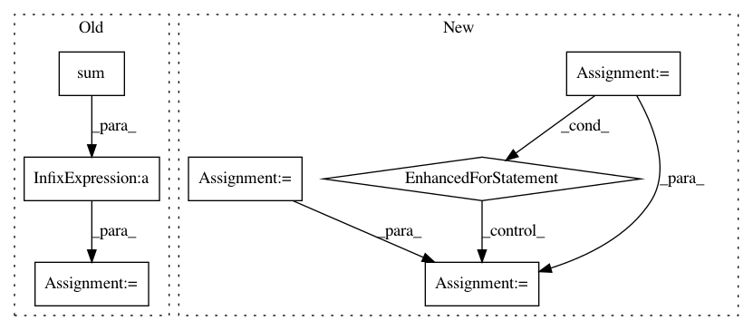

b523b464d8cafe29e352981c1c6df941f205592a,nilmtk/metrics.py,,mean_normalized_error_power,#,109
Before Change
denominator = {}
for appliance in predicted_power:
numerator[appliance] = np.sum(np.abs(predicted_power[appliance] -
df_appliances_ground_truth[appliance].values))
denominator[appliance] = np.sum(
df_appliances_ground_truth[appliance].values)
mne[appliance] = numerator[appliance] * 1.0 / denominator[appliance]
return mne
def rms_error_power(predicted_power, df_appliances_ground_truth):
After Change
// TODO: need to resample to keep things in step
mne = {}
for meter in predictions.submeters():
ground_truth_meter_identifier = meter.identifier._replace(
dataset=ground_truth.dataset())
ground_truth_meter = ground_truth[ground_truth_meter_identifier]
sections = meter.good_sections()
sample_period = meter.sample_period()
period_alias = "{:d}S".format(sample_period)
// TODO: preprocessing=[Resample(sample_period)])
pred_generator = meter.power_series(periods=sections)
total_diff = 0
sum_of_ground_truth_power = 0
while True:
try:
pred_chunk = next(pred_generator)
except StopIteration:
break
else:
truth_generator = ground_truth_meter.power_series(
periods=[pred_chunk.timeframe], chunksize=1E9)
truth_chunk = next(truth_generator)
// TODO: do this resampling in the pipeline?
truth_chunk = truth_chunk.resample(period_alias)
pred_chunk = pred_chunk.resample(period_alias)
diff = (pred_chunk.icol(0) - truth_chunk.icol(0)).dropna()
total_diff += sum(abs(diff))
sum_of_ground_truth_power += truth_chunk.icol(0).dropna().sum()
mne[meter.instance()] = total_diff / sum_of_ground_truth_power
return pd.Series(mne)
//////////////////// FUNCTIONS BELOW THIS LINE HAVE NOT YET CONVERTED TO NILMTK v0.2 //////////
In pattern: SUPERPATTERN
Frequency: 4
Non-data size: 7
Instances
Project Name: nilmtk/nilmtk
Commit Name: b523b464d8cafe29e352981c1c6df941f205592a
Time: 2014-07-09
Author: jack-list@xlk.org.uk
File Name: nilmtk/metrics.py
Class Name:
Method Name: mean_normalized_error_power
Project Name: nilmtk/nilmtk
Commit Name: 626173412d4281b693244e0705a787c4e7c08031
Time: 2014-07-09
Author: jack-list@xlk.org.uk
File Name: nilmtk/metrics.py
Class Name:
Method Name: fraction_energy_assigned_correctly
Project Name: Scitator/catalyst
Commit Name: f4beaac559e00a3676d942dc7e8fea69efc01cfe
Time: 2020-11-30
Author: raveforlive@gmail.com
File Name: catalyst/metrics/hitrate.py
Class Name:
Method Name: hitrate
Project Name: scikit-image/scikit-image
Commit Name: dd17b42f452bc156f55e3400f8ebc84d58761e65
Time: 2019-12-30
Author: gregory.lee@cchmc.org
File Name: skimage/filters/_window.py
Class Name:
Method Name: window